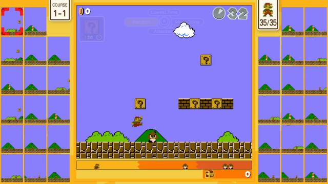

Super Mario Bros. 35 fue un videojuego de plataformas competitivo online con elementos de battle royale. Fue desarrollado por Arika y publicado por Nintendo y estuvo disponible exclusivamente en el servicio on-line de Nintendo Switch desde el 1 de octubre de 2020 hasta su retiro de la plataforma el 1 de abril de 2021. Se creó para celebrar el 35.º aniversario de Super Mario Bros

Treinta y cinco jugadores juegan simultáneamente en pantallas separadas a niveles del Super Mario Bros original, recogiendo monedas y derrotando enemigos, a la vez que intentan sobrevivir y enviar enemigos y obstáculos al campo de juego de sus adversarios. El último jugador vivo gana la partida El jugador tiene cuatro posibilidades acerca de a qué adversarios prefiere atacar; los jugadores con más monedas, los jugadores con menos cantidad de tiempo en el contador, los jugadores que le atacan a él, o sencillamente jugadores al azar.
Hay un tiempo máximo inicial que los jugadores pueden aumentar a base de derrotar enemigos y completar niveles. Al conseguir 20 monedas aparece un bloque de signo de interrogación que da al jugador habilidades aleatorias. Además, al terminar la partida los jugadores ganan monedas en función del puesto en que han quedado, las cuales se puden usar para empezar la siguiente partida con una de esas habilidades. Los jugadores también pueden practicar cualquier nivel que hayan completado en el modo principal del juego.